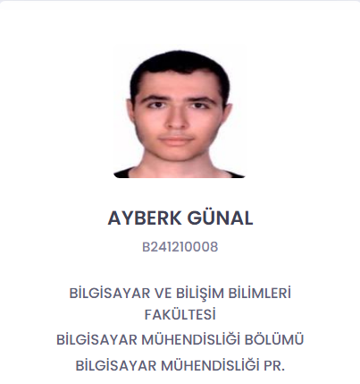

Ben Sakarya Üniversitesinde 1. Sınıf Bilgisayar Mühendisi Ayberk GÜNAL'ım. İstanbul'da dünyaya ve üniversiteye başlamadan önce de orada yaşıyordum fakat aslen Tokatlıyım. Bilgisayar oyunları oynamak en büyük hobimdir, bilgisayar mühendisi olmamın büyük sebebi de bilgisayarla haşır neşir olmamdır.
